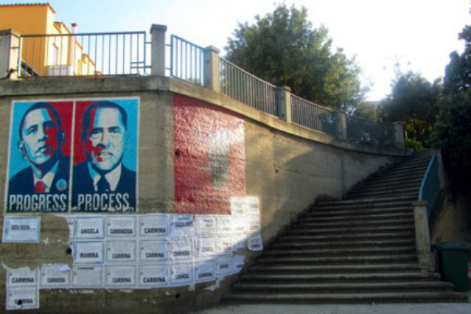
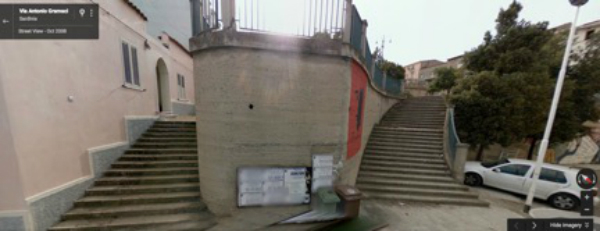
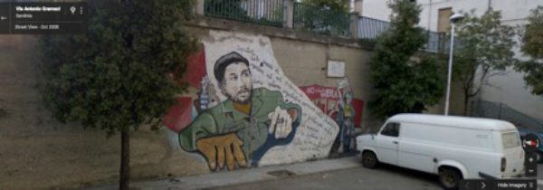
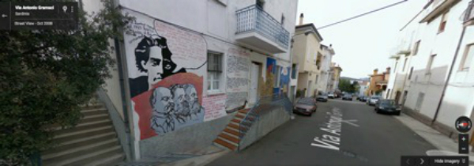
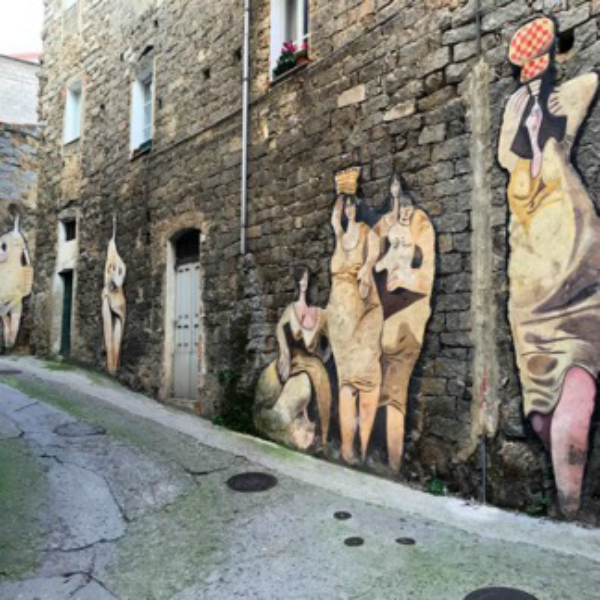
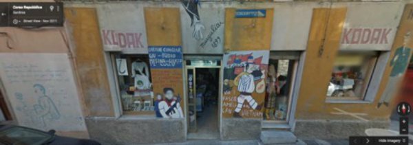
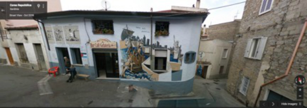

Orgosolo Case Study
Figure 6. Video demonstrating the virtual geosemiotic method in operation for the Obama and Berlusconi mural in the town of Orgosolo. This video is intended to be an introductory snapshot of a method in process rather than an exhaustive account of all procedures of discovery and interpretation.
Orgosolo is a town of less than 5,000 people in central Sardinia. Sardinia sits beneath Corsica and north of Sicily in the Mediterranean Sea to the west of Italy. When it comes to murals, Orgosolo is an unusual town as there is a profusion of the artform that is at least comparable with Berlin and its graffiti (see Heinsohn). Murals in Orgosolo portray the everyday life of rural workers; scenes of dwelling are frequent with the women of the town featured prominently. There are also depictions of events in the town’s history, the history of the left in Italy, and other events of global significance.
Obama Hope exists in Orgosolo as one half of a mural that depicts Silvio Berlusconi on the right half with word PROCESS underneath his portrait. Berlusconi’s face wears gritted teeth in contrast to Obama’s noble serenity on the left that is anchored by the words PROGRESS. A question lingering over this image is whether the juxtaposition of the two leaders posits a contrast, celebrating one at the expense of the other, or a claim of similarity, that the two leaders are two sides of the same coin. Can geosemiotic analysis help narrow the interpretation?
Figure 7: Via Antonio Gramsci, Orgosolo, Sardinia. Photograph retrieved from escalator.wordpress.com.
One geotagged picture of the mural was taken in July 2014 (escalator.wordpress.com), whilst another dates the mural at December 2011 (123RF.COM). Another photograph of the mural on Instragram is copyrighted by Isabetta Loi in 2016. We can reasonably claim that the mural has been visible on the wall for 5 years between 2011 and 2016.
One useful strategy for tracking down this image was searching Instagram for the geotag #orgosolo. From the Instagram pictures alone, we were able to make out that this particular wall is also used to paste wishes in the form of posters to the recently deceased with messages and usually a picture of a saint, the Virgin Mary, or Jesus Christ. In the images at our disposal, we find that these messages are pasted below the mural so as not to disturb its image, in spite of the fact that the bereavement messages are of a very different tenor to the mural and of greater local significance.
As we stated in the first part of this chapter, dialogicity is the principle that “all signs operate in aggregate” (p. 205). In other words, once placed out in the world, a sign gains its meaning through its position in relation to other signs. To investigate dialogicity, we examine the signs that surround our sign of interest, the Obama and Berlusconi mural. With this aim in mind, we took to the streets using Google Street View. Google has the town of Orgosolo comprehensively recorded in the form of street view photographs and our visual analysis was aided by the qualities of the narrow winding streets of the small town in the mountainous region. Such streets enabled the Google photography to yield high resolution images of murals on the sides of buildings.
Figure 8: The wall in question on Via Antonio Gramsci.
The location is on Via Antonio Gramsci and the closest mural is that of Gramsci himself in red and black with the black shrouding half of his face, the red half features minimal detail with only one eye, half a nose and half a mouth depicted. The text reads Terra Gramsci: Land of Gramsci. Only a few yards away sits a mural of Ernesto Che Guevara surrounded by white figures bearing red flags protesting against war. One long-haired figure in denim holds a sign reading “not in my name.” His penis hangs out of his jeans and a dismembered hand reaches for the member in question. Beneath his crotch sits a round peace symbol. The image appears to commemorate the loose coalition of leftist groups calling for peace in the 1960s and 1970s. Rolston translates the text on this image as “Che’s last letter to his sons […]: Above all, always be capable of feeling deeply in your heart any injustice, committed against anyone, anywhere in the world. This is the most beautiful quality of a revolutionary” (p. 91). The text brings the grotesque image of the hippie protestor into relief and confirms Roland Barthes argument regarding the importance of captions anchoring the meaning of images.
Figure 9: Che Guevara mural
In the same direction on Via Antonio Gramsci and just another few yards away, Lenin, Engels, and Marx look on imperiously as Gramsci sits atop, and cast again in black. The muralists label the bottom three figures but Gramsci is left unnamed. The clue is in the narrative detail “A Livorno nel del 1921 lascia P.S.I. e fonda it Partito Comunist.” In Livorno in 1921 he leaves the Italian Socialist Party and founds the Communist Party.
Figure 10: Gramsci, Lenin, Engels, and Marx.
Again, moving in the same direction down Via Antonio Gramsci the 1920 strike of Fiat workers in Turin is memorialized in a mural that depicts the workers marching away from the factories holding the red flag aloft. The strike was executed due to the lack of recognition for the workers’ factory councils: A form of self governance and management by factory labor (see Bellamy & Schecter). What we can see from the murals on this one street, then, is a clear reverence for Gramsci and historical left wing revolutionary movements. “Via Antonio Gramsci” is certainly not an empty signifier.
What then, can we learn from this dialogical analysis of Obama’s appearance on Via Antonio Gramsci? Clearly Obama does not have the same revolutionary Marxist credentials as Marx, Engels, Lenin, and Gramsci, but what is his relationship to Silvio Berlusconi? Berlusconi’s politics puts him as persona non grata on Via Antonio Gramsci. Silvio Berlusconi is notable for his portfolio of business interests that placed him as a controversial candidate for Prime Minister in four separate Italian governments. As owner of Fininvest, Berlusconi owned Mediaset, which held a virtual monopoly over commercial Italian television channels (Ginsberg). As one of the richest men in Europe in 2000, Berlusconi opposed the center left Olive Tree coalition branding any use of state power Communist (Ginsberg). Berlusconi was a by-word for corruption before any formal charges were brought against him, but in 2015 they were formally brought against him and he was sentenced to 3 years in prison for bribing a senator to defect to his party and effectively bring down the Romano Prodi government in 2006 (Bolton). From the word PROCESS and the expression of gritted teeth of Berlusconi in the mural we might assume that this image is indexing the legal proceedings that were brought against him. And yet, this sentence of three years would not be served as “the statute of limitations on his crime will kick in before the appeals process can be completed” (Bolton, para. 1). The results of the legal proceedings in 2015 would not have been known by the artist, and yet, there appears to be an inherent sarcasm at play in the image. The process, in other words, is not much of a process at all. Likewise, progress is also an illusion.
Rolston dwells on the Obama Berlusconi mural and suggests that it connects to a theme of rejection of metropolitan politics in general. For Rolston, ethnic pride is connected to a consistent critique of Italian national politics and corruption. In other words, process is the other side of progress on the same coin of corrupt politics. The bold rendering of national and international politics using Shepard Fairey’s aesthetic is contrasted with a “subtle, positive, and indeed tender representation of local people, skills and traditions” (p. 87). We can therefore expect a portrayal of a U.S. president in Orgosolo to be critical.
Figure 11: An example of a geotagged Instagram post of a mural depicting local women.
Anti-American sentiment is not rare in this muraled town. Corso Repubblica is a street in the center of the small town that features a number of visual anti-U.S. sentiments. Presumably dating back to the late 1960s and 1970s, a vampire bedecked in Uncle Sam regalia goose steps holding sacks of cash denoted by the dollar signs. He marches in front of flags representing Vietnam and generic socialist red flags seen also behind Che Guevara on Via Antonio Gramsci. A green suited Vietnamese soldier has his gun trained on the Dracula-esque character. Text on the mural reads “VIA I FASCISTI AMERICAN DAL VIETNAM” or remove the American fascists from Vietnam.
Figure 12: American fascists in Vietnam on Corso Repubblica.
A large depiction of the World Trade Center in New York with its buildings on fire is emblazoned across the Kikinu postcard and photo shop also on Corso Repubblica. The writing on the mural remains unclear and not cooperative with the efforts of my translation software, but I assume that this is a work of commemoration much as significant events are commemorated all over the town. Clearly there are fewer qualms about depicting this particular event in the small town many leagues away from the U.S. coast.
On the front of da Candela café on Corso Repubblica the statue of liberty is featured in a mural declaring solidarity with refugees. Lady liberty and a cityscape that also features a Florentine Duomo is on the other side of a wall from a group of travelers on a makeshift raft. The text reads: “SIAMO TUTTI CLANDESTINI”: we are all illegal. In this configuration, the statue of liberty is walled off from the people in need and looms as a beacon but only for a monotone dark city.
In light of such surrounding murals, it is hard to shake the notion that the icons of the United States and mainland Italy are a form of shorthand for imperialism in Orgosolo’s ecology of signs. It is also hard not to agree with Rolston’s implicit claim that the Obama Berlusconi mural is a critique of politics and corruption as two sides of the same coin. Such a message has a resonance in a town whose people resisted the Romans, the Carthiginians, and the North Atlantic Treaty Organization (NATO) who wished to build an airbase in the nearby Supramonte but were ultimately unsuccessful in the face of local protest (Rolston).
Figure 13: We are all illegal mural, La Candela, Corso Repubblica.am on Corso Repubblica.
Next Section